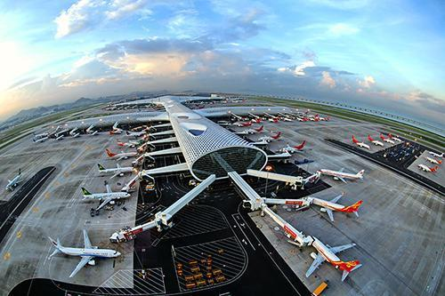
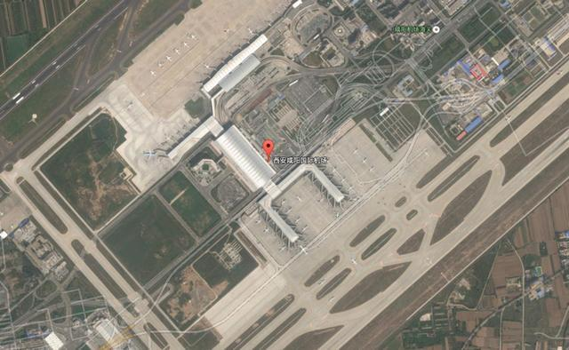

中國前十大機場是那些?

度假現在人們的出行方式越來越多，中國的高鐵也是世界聞名的，而飛機出行，不僅速度非常快，而且價格和高鐵也沒有太大的區別，所以中國的機場客流量也是非常大的。接下來就讓我們來看一下中國十大機場是哪些。 中國十大機場排行榜
1、北京首都國際機場
北京首都國際機場 北京作為一個人口非常多的城市，這裡的交通非常的擁堵。北京首都國際機場在全世界的排名也是位居前三的，而且人數還在直線上升，很有可能在未來幾年內躋身全世界第一，成為客流量最多的機場。
2、香港國際機場
香港國際機場 香港是一個眾所周知的旅遊度假的好地方，而且經濟也非常的繁榮，很多人都選擇來香港買東西，所以香港國際機場不僅乘客多，而且運輸的貨物也多。除此之外，香港國際機場的服務態度是受到一致好評的。
3、上海浦東國際機場
上海浦東國際機場 作為中國十大機場之一，上海浦東國際機場的占地面積非常龐大，而且他的機位也非常充足，這也為他驚人的客流量奠定了基礎。上海經濟的高速發展，也讓很多商務人員成為了浦東國際機場的常客。
4、廣州白雲國際機場
廣州白雲國際機場 廣州白雲國際機場近幾年和上海浦東國際機場不相上下，而且廣州白雲國際機場在不斷的擴建，不管是跑道還是機位都在逐步增加，而且他所能到達的地方已經超過二百多個，可以到達全球四十多個地區。
5、成都雙流國際機場
成都雙流國際機場 成都這個城市近幾年非常的火爆，很好的促進了成都的旅遊業，而旅遊業的高速發展帶來的結果當讓是交通運輸業的繁忙，所以，成都雙流國際機場的吞吐量成直線上升的趨勢，甚至超越了深圳的機場。
6、深圳寶安國際機場
 深圳寶安國際機場 深圳寶安國際機場內的自助服務發展的非常好，不僅有效節約了人力資源，而且還方便了網上消費。深圳寶安國際機場這幾年的客流量也是不容小覷的，再加上機場附近的交通十分便利，所以很受歡迎。
7、昆明長水國際機場
昆明長水國際機場 作為中國十大機場之一，昆明的地理環境非常優越，而昆明長水國際機場可以通往許多國家和地區，用時短、速度快，很好的不進了國家與國家之間的經濟文化交流，也很好的推動了我國旅遊業的發展。
8、西安咸陽國際機場
 西安咸陽國際機場 西安咸陽國際機場的服務設施做的非常好，在機場內部設有很多公共設施，解決了人們經常會無聊的一些問題，比如貨幣交換、商品暫存等。而且西安咸陽國際機場近幾年也在不斷擴大，客流量直線上升。
9、重慶江北國際機場
重慶江北國際機場 重慶是一個歷史文化非常豐富的城市，早在近一百年前就有了飛機場，當時的飛機場並沒有那麼普及，普通人是沒有辦法乘坐的，到了後來有了重慶江北國際機場，這才成為了非常普遍的出行方式，方便快捷。
10、杭州蕭山機場
杭州蕭山機場 到了去年，杭州蕭山機場的客流量已經達到了三千多萬次，一開始杭州蕭山機場並不在蕭山，後來是為了各方面的便捷，才轉移到了蕭山。杭州蕭山機場自通航以來，就獲得了不少榮譽稱號，收到大眾的一致好評。